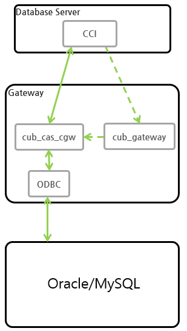

CUBRID DBLink
Introduction to CUBRID DBLink
When retrieving information from a database, it is often necessary to retrieve information from an external database. In this way, if you use CUBRID DBLink to inquire information in an external database, you can access information in other databases. CUBRID DBLink provides a function to inquire information in the databases of homogeneous CUBRID and heterogeneous Oracle, MySQL and MariaDB.
It has the advantage of being able to directly inquire information from an external database. However, it is possible to set up multiple external databases, but when searching for information, it is possible to inquire information from only one other database.
CUBRID DBLink can be used in the form of a DBLINK statement specifying the server to be connected and the query to be executed in the FROM clause of SELECT and in the form of a remote table (table extension), and only remote table forms can be used in INSERT/UPDATE/DELETE/MERGE.
CUBRID DBLink diagram
CUBRID DBLink supports DBLink between homogeneous and heterogeneous DBLinks.
Homogeneous DBLink diagram
If you look at the configuration diagram for inquiring information of a homogeneous database, you can use CCI in Database Server to connect to homogeneous brokers and inquire information from an external database.

Heterogeneous DBLink diagram
If you look at the configuration diagram for inquiring information in heterogeneous databases, you can inquire information in heterogeneous databases through GATEWAY. The gateway uses the ODBC (Open DataBase Connectivity) driver of the connecting database.

GATEWAY
A gateway is a middleware that mediates between the CUBRID database and heterogeneous databases and is similar to a broker. The gateway connects to a heterogeneous database server (Oracle/MySQL/MariaDB etc), retrieves data, and delivers it to the CUBRID database server.
A cubrid system including a gateway has a multi-hierarchical structure including cub_gateway and cub_cas_cgw as shown in the figure below.

cub_cas_cgw
cub_cas_cgw (CAS Gateway) acts as a common application server used by all the application clients that request connections. cub_cas_cgw also acts as the database server’s client and provides the connection to the database server upon the client’s request. The number of cub_cas_cgw(s) running in the service pool can be specified in the cubrid_broker.conf file, and this number is dynamically adjusted by cub_gateway.
cub_gateway
cub_gateway mediates the connection between the application client and the cub_cas_cgw. That is, when an application client requests access, the cub_broker checks the status of the cub_cas_cgw through the shared memory, and then delivers the request to an accessible cub_cas_cgws. It then returns the processing results of the request from the cub_cas_cgw to the application client.
The cub_gateway also manages the server load by adjusting the number of cub_cas_cgw (s) in the service pool and monitors and manages the status of the cub_cas_cgw. If the cub_gateway delivers the request to cub_cas_cgw but the connection to cub_cas_cgw 1 fails because of an abnormal termination, it sends an error message about the connection failure to the application client and restarts cub_cas_cgw 1. Restarted cub_cas_cgw 1 is now in a normal stand-by mode, and will be reconnected by a new request from a new application client.
Start GATEWAY
Enter the command below to start the GATEWAY.
$ cubrid gateway start
The following message is returned if the GATEWAY is already running.
$ cubrid gateway start
@ cubrid gateway start
++ cubrid gateway is running.
Stopping GATEWAY
Enter the below command to stop the GATEWAY.
$ cubrid gateway stop
The following message is returned if the GATEWAY has stopped.
$ cubrid gateway stop
@ cubrid gateway stop
++ cubrid gateway is not running.
Restarting GATEWAY
Enter the below command to restart the GATEWAY.
$ cubrid gateway restart
Checking GATEWAY Status
cubrid gateway status provides various options and allows you to check the gateway status information, including the number of completed tasks for each gateway and the number of tasks waiting to be processed.
GATEWAY status is the same as broker, so refer to Checking Broker Status.
cubrid gateway status [options] [expr]
Starting the GATEWAY together when the CUBRID service starts
To have GATEWAY started upon startup of the CUBRID service (cubrid service start), configure gateway in the service parameter of the cubrid.conf file.
# cubrid.conf
[service]
service=server,broker,gateway,manager
...
CUBRID DBLINK settings
The settings for using CUBRID DBLink are different from those of homogeneous DBLink and heterogeneous DBLink.
Homogeneous DBLink Setting
If you look at the homogeneous DBlink diagram above, you need to connect to the broker in the remote database, so you need to set up the broker in the remote database. This setting is the same as the general broker setting.
Heterogeneous DBLink Setting
To connect to a heterogeneous database (Oracle/MySQL/MariaDB), cubrid_gateway.conf, unixODBC installation, and ODBC Driver information settings are required.
Gateway configuration file
The parameters used in cubrid_gateway.conf, the default gateway configuration file created when CUBRID is installed, are almost identical to the broker parameters, and some additional parameters that must be changed are included. Parameter values not included by default can be directly added/edited and used. The following is the content of the cubrid_gateway.conf file that is provided by default during installation.
The following is the content of the cubrid_gateway.conf file provided by default.
[gateway]
MASTER_SHM_ID =50001
ADMIN_LOG_FILE =log/gateway/cubrid_gateway.log
[%oracle_gateway]
SERVICE =OFF
SSL =OFF
APPL_SERVER =CAS_CGW
BROKER_PORT =53000
MIN_NUM_APPL_SERVER =5
MAX_NUM_APPL_SERVER =40
APPL_SERVER_SHM_ID =53000
LOG_DIR =log/gateway/sql_log
ERROR_LOG_DIR =log/gateway/error_log
SQL_LOG =ON
TIME_TO_KILL =120
SESSION_TIMEOUT =300
KEEP_CONNECTION =AUTO
CCI_DEFAULT_AUTOCOMMIT =ON
APPL_SERVER_MAX_SIZE =256
CGW_LINK_SERVER =ORACLE
CGW_LINK_SERVER_IP =localhost
CGW_LINK_SERVER_PORT =1521
CGW_LINK_ODBC_DRIVER_NAME =Oracle_ODBC_Driver
CGW_LINK_CONNECT_URL_PROPERTY =
[%mysql_gateway]
SERVICE =OFF
SSL =OFF
APPL_SERVER =CAS_CGW
BROKER_PORT =56000
MIN_NUM_APPL_SERVER =5
MAX_NUM_APPL_SERVER =40
APPL_SERVER_SHM_ID =56000
LOG_DIR =log/gateway/sql_log
ERROR_LOG_DIR =log/gateway/error_log
SQL_LOG =ON
TIME_TO_KILL =120
SESSION_TIMEOUT =300
KEEP_CONNECTION =AUTO
CCI_DEFAULT_AUTOCOMMIT =ON
APPL_SERVER_MAX_SIZE =256
CGW_LINK_SERVER =MYSQL
CGW_LINK_SERVER_IP =localhost
CGW_LINK_SERVER_PORT =3306
CGW_LINK_ODBC_DRIVER_NAME =MySQL_ODBC_Driver
CGW_LINK_CONNECT_URL_PROPERTY ="charset=utf8;PREFETCH=100;NO_CACHE=1"
[%mariadb_gateway]
SERVICE =OFF
SSL =OFF
APPL_SERVER =CAS_CGW
BROKER_PORT =59000
MIN_NUM_APPL_SERVER =5
MAX_NUM_APPL_SERVER =40
APPL_SERVER_SHM_ID =59000
LOG_DIR =log/gateway/sql_log
ERROR_LOG_DIR =log/gateway/error_log
SQL_LOG =ON
TIME_TO_KILL =120
SESSION_TIMEOUT =300
KEEP_CONNECTION =AUTO
CCI_DEFAULT_AUTOCOMMIT =ON
APPL_SERVER_MAX_SIZE =256
CGW_LINK_SERVER =MARIADB
CGW_LINK_SERVER_IP =localhost
CGW_LINK_SERVER_PORT =3306
CGW_LINK_ODBC_DRIVER_NAME =MariaDB_ODBC_Driver
CGW_LINK_CONNECT_URL_PROPERTY =
GATEWAY Parameter
This parameter is set to use a heterogeneous database and DBLink.
The meaning of each parameter is slightly different for each heterogeneous database.
Parameter Name |
Type |
Value |
|---|---|---|
APPL_SERVER |
string |
|
CGW_LINK_SERVER |
string |
|
CGW_LINK_SERVER_IP |
string |
|
CGW_LINK_SERVER_PORT |
int |
|
CGW_LINK_ODBC_DRIVER_NAME |
string |
|
CGW_LINK_CONNECT_URL_PROPERTY |
string |
APPL_SERVER
APPL_SERVER is the part that sets the application server name of the gateway and must be set as CAS_CGW.
CGW_LINK_SERVER
CGW_LINK_SERVER should set the name of the heterogeneous database to be used by connecting to CAS_CGW. Currently, supported databases are Oracle, MySQL and MariaDB.
CGW_LINK_SERVER_IP
CGW_LINK_SERVER_IP should set the IP address of the heterogeneous database to be connected with CAS_CGW.
Note
In case of Oracle, net_service_name of tnsnames.ora is used, so this parameter is not used.
For details, refer to Setting Connection Information for Connection to Oracle Database.
CGW_LINK_SERVER_PORT
CGW_LINK_SERVER_PORT should set the port number of databaseto be connected with CAS_CGW.
Note
In case of Oracle, net_service_name of tnsnames.ora is used, so this parameter is not used.
For details, refer to Setting Connection Information for Connection to Oracle Database.
CGW_LINK_ODBC_DRIVER_NAME
CGW_LINK_ODBC_DRIVER_NAME must set the ODBC Driver name provided by the heterogeneous database when connecting with CAS_CGW.
Note
In Windows, if the ODBC driver of the heterogeneous database is installed, the driver name can be checked through the ODBC data source manager.
In Linux, the driver name must be specified directly in odbcinit.ini.
For details, refer to :ref: ODBC Driver Information Settings <odbcdriver-info>.
CGW_LINK_CONNECT_URL_PROPERTY
CGW_LINK_CONNECT_URL_PROPERTY sets the connection property used for the connection string for heterogeneous database connection.
Note
Connection properties are different for each database, so refer to the site below.
Oracle : https://docs.oracle.com/cd/B19306_01/server.102/b15658/app_odbc.htm#UNXAR418
Install unixODBC
The unixODBC Driver Manager is an open source ODBC driver manager that can be used with ODBC drivers on Linux and UNIX operating systems. To use ODBC in the gateway, unixODBC must be installed.
Note
In Windows, you can use Microsoft® ODBC Data Source Manager, which is installed by default.
How to install unixODBC
$ wget https://www.unixodbc.org/unixODBC-2.3.9.tar.gz
$ tar xvf unixODBC-2.3.9.tar.gz
$ cd unixODBC-2.3.9
$ ./configure
$ make
$ make install
Note
For instructions on how to install the unixODBC driver manager, refer to the url below.
unixODBC website: https://www.unixodbc.org/
ODBC Driver information setting
After unixODBC is installed, the ODBC Driver information of the database to be connected must be registered.
ODBC Driver information is registered by directly modifying odbcinst.ini.
The following is an example of setting MySQL, Oracle and MariaDB ODBC Driver information.
[MySQL ODBC 8.0 Unicode Driver]
Description = MySQL ODBC driver v8.0
Driver=/usr/lib64/libmyodbc8w.so
[Oracle 11g ODBC driver]
Description = Oracle ODBC driver v11g
Driver = /home/user/oracle/instantclient/libsqora.so.19.1
[mariadb odbc 3.1.13 driver]
Description= mariadb odbc driver 3.1.13
Driver=/home/user/mariadb-odbc-3.1.13/lib64/mariadb/libmaodbc.so
Note
For reference, in the example above, the driver names are “MySQL ODBC 8.0 Unicode Driver”, “Oracle 11g ODBC driver” and “mariadb odbc 3.1.13 driver” respectively.
Oracle Setting for DBLink
Oracle Environment Configuration
To use Oracle in DBLink, you must install and configure Oracle Instant Client, set connection information, set Oracle Database environment variables, and set gateway.
Install Oracle Instant Client ODBC
Download ODBC Package and Basic Package from the Oracle Instant Client download site and extract them to the same directory.
unzip instantclient-basic-linux.x64-19.20.0.0.0dbru.zip
unzip instantclient-odbc-linux.x64-19.20.0.0.0dbru.zip
Oracle Instant Client Download Site: https://www.oracle.com/database/technologies/instant-client/downloads.html
Oracle Instant Client Environment Variable Settings
export ORACLE_INSTANT_CLIENT=/home/user/oracle/instantclient
export PATH=$ORACLE_INSTANT_CLIENT:$PATH
export LD_LIBRARY_PATH=$ORACLE_INSTANT_CLIENT:$LD_LIBRARY_PATH
Set connection information for connection to Oracle Database
In order to connect to Oracle Database, the tnsnames.ora file containing connection information must be modified. Connection information should be written in these three items: HOST, PORT, and SERVICE_NAME in the basic format below. For the tnsnames.ora file in which connection information is created, the directory path must be set in the TNS_ADMIN environment variable. For how to set TNS_ADMIN, refer to “Setting TNS_ADMIN Environment Variable”.
Default format of the tnsnames.ora file
net_service_name =
(DESCRIPTION=
(ADDRESS = (PROTOCOL = TCP)(HOST = xxx.xxx.xxx.xxx)(PORT = 1521)
)
(CONNECT_DATA =
(SERVICE_NAME=service_name)
)
)
net_service_name: The name of the net service for database connection, and the name used for the db_name of the connection url.
HOST: IP address or server name to connect to the database.
PORT: Port required for connection. In most cases, the default port is 1521.
SERVICE_NAME: The name of the database to connect to.
Note
For reference, no error occurs even if net_service_name is duplicated. However, since it may be connected to a different server than the intended one, net_service_name must be set so that it does not overlap.
Oracle Database Environment Variable Settings
The following environment variables must be set in the Oracle database server.
export ORACLE_SID=XE
export ORACLE_BASE=/u01/app/oracle
export ORACLE_HOME=$ORACLE_BASE/product/11.2.0/xe
export PATH=$ORACLE_HOME/bin:$PATH
ORACLE_SID is the system identifier.
ORACLE_BASE is the Oracle base directory.
ORACLE_HOME is the path where the Oracle database is installed.
TNS_ADMIN environment variable setting
TNS_ADMIN points to the directory path where the tnsnames.ora file is located. If there is a tnsnames.ora file in /home/user/myconfigs, you can settings it as follows.
export TNS_ADMIN=/home/user/myconfigs
Configuring cubrid_gateway.conf for Oracle
In order to connect to Oracle from the gateway, several settings are required as follows.
For details, refer to Gateway configuration file.
Because the gateway uses the information in tnsnames.ora to connect to oracle, it is not necessary to write CGW_LINK_SERVER_IP and CGW_LINK_SERVER_PORT. Even if the corresponding information is written, the gateway does not refer to it.
APPL_SERVER =CAS_CGW
.
.
.
CGW_LINK_SERVER =ORACLE
CGW_LINK_ODBC_DRIVER_NAME =Oracle 19c ODBC driver
CGW_LINK_CONNECT_URL_PROPERTY =
MySQL Configuration for DBLink
MySQL Environment Configuration
Install MySQL ODBC Driver
MySQL Unicode ODBC Driver is required to connect to MySQL from the gateway. The following is how to install MySQL ODBC Driver.
Use the MySQL Yum repository to provide the Connector/ODBC RPM package. The MySQL Yum repository should be in your system’s list of repositories, If not, select the package for your platform from the MySQL Yum repository download page ( https://dev.mysql.com/downloads/repo/yum/ ) and download it.
Install the downloaded release package.
$ sudo yum install mysql80-community-release-el6-{version-number}.noarch.rpm
Update the repository using yum.
$ sudo yum update mysql-community-release
Install Connector/ODBC with the command below.
$ sudo yum install mysql-connector-odbc
For detailed installation instructions, refer to https://dev.mysql.com/doc/connector-odbc/en/connector-odbc-installation-binary-yum.html.
Configuring cubrid_gateway.conf for MySQL
In order to connect to MySQL from the gateway, several settings are required as below.
For details, refer to gateway configuration file.
APPL_SERVER =CAS_CGW
.
.
.
CGW_LINK_SERVER =MYSQL
CGW_LINK_SERVER_IP =localhost
CGW_LINK_SERVER_PORT =3306
CGW_LINK_ODBC_DRIVER_NAME =MySQL ODBC 8.0 Unicode Driver
CGW_LINK_CONNECT_URL_PROPERTY ="charset=utf8;PREFETCH=100;NO_CACHE=1"
MariaDB Configuration for DBLink
MariaDB Environment Configuration
Install MariaDB ODBC Driver
MariaDB ODBC Driver is required to connect to MariaDB from the gateway.
The following is how to install MariaDB ODBC Driver.
MariaDB Connector/ODBC package can be downloaded by selecting the version from the page below.
https://mariadb.com/downloads/connectors/
Extract the files from the downloaded tarball package. Then, install the driver’s shared library in an appropriate location in the system. The installed driver must register driver information in odbcinst.ini. For settings method, refer to :ref: ODBC Driver Information Settings <odbcdriver-info>.
$ mariadb-connector-odbc-3.1.13-centos7-amd64.tar.gz -C mariadb-odbc-3.1.13
For detailed installation instructions, refer to https://mariadb.com/docs/connectors/mariadb-connector-odbc/mariadb-connector-odbc-guide#installing-mariadb-connector-odbc-on-linux .
Configuring cubrid_gateway.conf for MariaDB
In order to connect to MariaDB from the gateway, several settings are required as below.
For details, refer to gateway configuration file.
APPL_SERVER =CAS_CGW
.
.
.
CGW_LINK_SERVER =MARIADB
CGW_LINK_SERVER_IP =localhost
CGW_LINK_SERVER_PORT =3306
CGW_LINK_ODBC_DRIVER_NAME =mariadb odbc 3.1.13 driver
How to use Cubrid DBLink
If the information on brokers of CUBRID to be connected to use DBLink has been completed or gateway settings for heterogeneous databases have been completed, let’s learn how to write a query statement using DBLink.
There are two ways to write DBLINK Query statement for data inquiry.
First, how to query information from other databases by writing DBLINK syntax in the FROM clause
The Query statement below is a Query statement that inquires the remote_t table information of another database of IP 192.xxx.xxx.xxx.
SELECT * FROM DBLINK ('192.xxx.xxx.xxx:53000:testdb:user:password:','SELECT col1, col2 FROM remote_t') AS t(col1 int, col2 varchar(32));
Note
In case of Oracle, ip and port are gateway connection information among remote connection information, and net_service_name of tnsnames.ora must be entered in the db_name field. If net_service_name is ora_test, write as follow
SELECT * FROM DBLINK (‘192.xxx.xxx.xxx:53000:ora_test:user:password:’,’SELECT col1, col2 FROM remote_t’) AS t(col1 int, col2 varchar(32));
Second, use the CREATE SERVER statement to protect user information (id, password) and the hassle of writing connection information every time you write a Query. If the CREATE SERVER statement is used, the Query statement becomes concise and helps to protect user information.
CREATE SERVER remote_srv1 ( HOST='192.xxx.xxx.xxx', PORT=53000, DBNAME=testdb, USER=user, PASSWORD='password');
SELECT * FROM DBLINK (remote_srv1, 'SELECT col1 FROM remote_t') AS t(col1 int);
Note
DBLINK can set additional connection properties in the connection URL. For detailed attribute details, refer to CCI driver’s cci_connect_with_url function
If the DBLINK target database is configured as an HA environment, you can use the altHosts attribute to set it as shown in the example below.
192.168.0.1:53000:testdb:user:password::?altHosts=192.168.0.2:33000,192.168.0.3:33000
In the example, if the 192.168.0.1 server is an active database and cannot connect to the server, it is the setting to request a connection to the 192.168.0.2 server. As in the example above, multiple altHosts can be specified, and connections are attempted in the order listed.
For detailed DBLink SQL syntax, refer to SELECT and SERVER DEFINITION STATEMENTS.
Notice
Synonym creation: Local synonyms can be created for remote tables and remote synonyms. In the case of DBMSs other than CUBRID, the user name or db name must be added to the original table name.
-- for CUBRID
create synonym synonym_1 for t1@srv1;
create synonym synonym_2 for remote_synonym@srv1;
-- for ORACLE
create synonym synonym_ora for user_ora.t1@srv_ora;
-- for MySQL and MariaDB
create synonym synonym_my for my_db.t1@srv_mysql;
create synonym synonym_maria for maria_db.t1@srv_maria;
The reserved word processing character for CUBRID is the double quotation mark (” “) as like the following.
SELECT ["COLUMN"],["ADD"],["ALTER"] FROM ["TABLE"]@srv1 ;
SELECT * FROM dblink(srv1, 'select "COLUMN","ADD","ALTER" from "TABLE" ') AS t(a varchar, b varchar, c varchar );
The reserved word processing character for ORACLE is the double quotation mark (” “) as like the following.
SELECT ["COLUMN"],["ADD"],["ALTER"] FROM ["TABLE"]@srv1 ;
SELECT * FROM dblink(srv1, 'select "COLUMN","ADD","ALTER" from "TABLE" ') AS t(a varchar, b varchar, c varchar );
The reserved word processing character for MySQL and MariaDB is the backquote (` `) as like the following.
SELECT [`COLUMN`],[`ADD`],[`ALTER`] FROM [`TABLE`]@srv1 ;
SELECT * FROM dblink(srv1, 'select `COLUMN`,`ADD`,`ALTER` from `TABLE` ') AS t(a varchar, b varchar, c varchar );
Constraints
Common Constraints
The charset of the remote database must be unicode (utf-8).
- Table extension style (object@server)
Supports only tables, views, and synonyms
Serial, built-in functions, and stored functions are not supported.
(Example: stored function sp_func() of remote server (server1) cannot be used in sp_func@server1(arg1, …) format.)
All functions (stored functions, built-in functions including SYSDATE), serial-related functions and system constants in the SELECT query all operate locally. (If you need to execute a function or serial in a remote DB, you should use the DBLINK statement.) For example, when the select query for remote table is requested and the optimizer rewrite query as below, you look the queries in DBLINK() are only executed in the remote DB.
SELECT A.*, rownum rn, '' empty, null null_col, SYSDATE
FROM t1@srv1 A ;
-- rewritten query
SELECT A.id, A.parentid, A.[text], rownum, '', null, SYS_DATE -- at local
FROM ( SELECT [_dbl].id, [_dbl].parentid, [_dbl].[text]
FROM DBLINK( srv1 /* '192.168.1.125:33000:remotedb1:dba:*:' */ ,
'SELECT * FROM tree A') AS [_dbl](id integer, parentid integer, [text] varchar(32)) -- at remote
) A (id, parentid, [text])
All functions, serial-related functions, and system constants of INSERT/UPDATE/DELETE/MERGE queries are all executed on the remote server, so be careful when using built-in functions (i.e., CUBRID’s built-in functions may not be supported by the remote DBMS or have different usage instructions)
Transaction: Transactions (commit, rollback) between local DB and remote DB are not processed as one transaction. DML (INSERT/UPDATE/DELETE/MERGE) queries in the remote DB are excuted as auto commits separately from transactions in the local DB. As in the example below, when performing a transaction, data is inserted into the remote DB, but no data is entered into the local DB, because doing rollback.
-- local input
INSERT INTO t1(a, b) VALUES (1, 'local');
-- remote input
INSERT INTO t2@srv1(a, b) VALUES (1, 'remote');
rollback;
SELECT a, b FROM t1, t2@srv1 t2 WHERE t1.a = t2.a;
there’s no result
TRUNCATE statement is not supported.
CREATE TABLE … LIKE table@server syntax is not supported (For reference, CREATE TABLE … AS SELECT FROM table@server syntax is supported)
DBLINK() and remote table (@server) are not allowed in the TRIGGER statement.
predicate push: The SELECT statement written in table extension style (@server) is internally rewritten to DBLINK() by the optimizer. To improve performance, It push with conditional clauses that can be performed in the remote DB. However, if a built-in function or user-defined function in a conditional clause is used, it is excluded from pushing.
Performance notes
Note
When the connect by clause, group by clause, having clause, and limit clause are used in the SELECT statement in table extension style (@server), the where condition, group by clause, having clause, and limit clause are not executed in the remote DB. After executing exclude the statement in the remote DB and sending the performed results to the local DB, performance may be slowed due to execute the statement in the local DB.
Below is an example of processing the “group by” and “count()” after transferring all data from the remote DB’s tree table to the local DB.
-- original query SELECT A.parentid, count() FROM tree@srv1 A GROUP BY A.parentid ; -- rewritten query SELECT A.parentid, count() FROM ( SELECT [_dbl].parentid FROM DBLINK( srv1 /* '192.168.1.125:33000:remotedb1:dba::' */, 'SELECT parentid FROM tree A' ) AS [_dbl](parentid integer) ) A (parentid) GROUP BY A.parentidThe SYSDATE function used in the table extension style (@server) is performed in the local DB, so caution is required if the time between servers is different.
-- original query SELECT * FROM tbl@srv1 WHERE col1 >= sysdate; -- rewritten query SELECT * FROM ( SELECT col1, col2 FROM DBLINK( srv1 /* '192.168.1.125:33000:remotedb1:dba::' */, 'SELECT col1, col2 FROM tbl' ) AS [_dbl](col1 date, col2 varchar) ) tbl (col1, col2) WHERE col1>= SYS_DATEWhen using a scalar subquery, subquery and EXIST clause with a co-related condition in the table extension style (@server), the remote query brings the whole data to the local DB every time and performs to find data corresponding to the join column. As a result, a rapid decrease in performance occurs. The example below uses T1.a as a condition for a scalar subquery, and all data as T1.a < 4 of svr1’s tree table is sent to the local DB to find suitable data per executing scalar subquey, so it may degrade performance.
-- original query SELECT T1.a, (SELECT A.text FROM tree@srv1 A WHERE A.id = T1.a ) remote_text FROM hangul_t1 T1 WHERE T1.a < 4; -- rewritten query SELECT T1.a, (SELECT A.[text] from (select [_dbl].[text], [_dbl].id FROM DBLINK(srv1 /* '192.168.1.125:33000:remotedb1:dba::' */, 'SELECT [text], id FROM tree A' ) AS [_dbl]([text] varchar(32), id integer) WHERE [_dbl].id=T1.a) A ([text], id)) FROM hangul_t1 T1 WERE (T1.a < ?:0)
CUBRID Constraints
ENUM, BLOB, CLOB, and SET types are not supported in the select statement.
If the system parameters of the local DB and remote DB are different, undesirable results may occur.
Common constraints of Heterogeneous DBMS.
The gateway must use the Unicode-only ODBC Driver of the heterogeneous remote database (Oracle/MySQL/MariaDB).
Among ODBC types, SQL_INTERVAL, SQL_GUID, SQL_BIT, SQL_BINARY, SQL_VARBINARY, SQL_LONGVARBINARY, SQL_LONGVARCHAR, and SQL_WLONGVARCHAR are not supported types.
ODBC SQL Type
Oracle Data Type
MySQL Data Type
MariaDB Data Type
SQL_LONGVARCHAR
LONG, CLOB
LONGTEXT
LONGTEXT
SQL_WLONGVARCHAR
NCLOB
SQL_BIT
BIT
BIT
SQL_BINARY
BINARY
BINARY
SQL_VARBINARY
RAW
VARBINARY
VARBINARY
SQL_LONGVARBINARY
LONG RAW
LONG VARBINARY
LONG VARBINARY
BLOB
BLOB
BLOB
BFILE
TINYBLOB
TINYBLOB
MEDIUMBLOB
MEDIUMBLOB
LONGBLOB
LONGBLOB
GEOMETRY
GEOMETRY
POINT
POINT
POLGON
POLGON
GEOMETRYCOLLECTION
GEOMETRYCOLLECTION
MULTILINESTRING
MULTILINESTRING
MULTIPOINT
MULTIPOINT
MULTIPOLYGON
MULTIPOLYGON
SQL_INTERVAL
INTERVAL YEAR TO MONTH
INTERVAL DAY TO SECOND
The maximum string length for one column is 16M. The table below shows the data type for each DBMS with a data length of 16M or more.
DBMS Name
Data Type
Oracle
LONG, NCLOB, CLOB
MySQL
LONGTEXT
MariaDB
LONGTEXT
In DML statements such as INSERT, UPDATE, DELETE, and MERGE, if the built-in functions not supported by CUBRID and are not in the form of function (parameter 1, …, parameter N) as below, the query results error.
Example: the convert function of MySQL and MariaDB: convert(‘binary’ using binary)
Note
Oracle Constraints
LONG, INTERVAL DAY TO SECOND, INTERVAL YEAR TO MONTH, BLOB, and CLOB types are not supported in the select statement. For more information, refer to Unsupported Types of Common constraints of Heterogeneous DBMS
The INTERVAL DAY TO SECOND and INTERVAL YEAR TO MONTH types are not supported by Oracle ODBC. For more information, see “Using the Oracle ODBC Driver” (https://docs.oracle.com/en/database/oracle/oracle-database/19/adfns/odbc-driver.html#GUID-3FE69BEF-F8D2-4152-9B1A-877186C47028).
Oracle ODBC does not support the time zone type, so when SELECTing time zone data, the time zone is calculated as a local time, converted to timestamp type, and returned.
Below is an example of converting Oracle DB’s time zone data to a local time zone when querying it with ODBC. The entered time zone is “+02:00”, converted to local time zone “+09:00”, and output as “PM 08:00”.
-- oracle input
INSERT INTO tbl VALUES (to_timestamp_tz('2021-07-25 12:34:56 +02:00', 'yyyy-mm-dd hh24:mi:ss tzh:tzm'));
-- local
SELECT t_timestamp_timezone2 FROM tbl@server;
07:34:56.000 PM 07/25/2021
SELECT to_char(t_timestamp_timezone2, 'yyyy-mm-dd hh24:mi:ss.ff tzh:tzm') FROM tbl@server;
2021-07-25 19:34:56.000 +09:00
REPLACE syntax is not supported and an error occurs when used.
Oracle’s processing range of date and number types is larger than CUBRID’s, so data that falls outside of CUBRID’s type range will result in an error.
Note
MySQL/MariaDB limitations
When using cache in Mysql, the memory usage of gateway cub_cas_cgw increases, so it is recommended to use PREFETCH, NO_CACHE=1.
When performing a query that includes the repeat() function in MySQL/MariaDB, part of the string may be truncated or the string may not be read.
LONGTEXT, BIT, BLOB, and LONGBLOB types are not supported in the select statement. For more information, refer to Unsupported Types of Common constraints of Heterogeneous DBMS